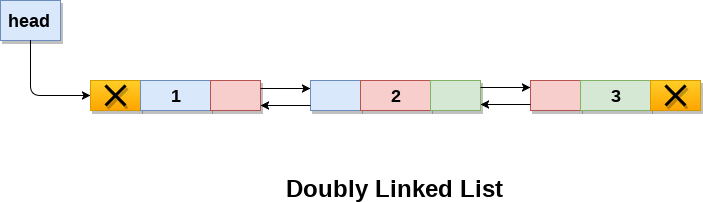

Doubly linked list is a complex type of linked list in which a node contains a pointer to the previous as well as the next node in the sequence. Therefore, in a doubly linked list, a node consists of three parts: node data, pointer to the next node in sequence (next pointer) , pointer to the previous node (previous pointer). A sample node in a doubly linked list is shown in the figure.

In C, structure of a node in doubly linked list can be given as :
The prev part of the first node and the next part of the last node will always contain null indicating end in each direction.
In a singly linked list, we could traverse only in one direction, because each node contains address of the next node and it doesn't have any record of its previous nodes. However, doubly linked list overcome this limitation of singly linked list. Due to the fact that, each node of the list contains the address of its previous node, we can find all the details about the previous node as well by using the previous address stored inside the previous part of each node.
Memory Representation of a doubly linked list
Memory Representation of a doubly linked list is shown in the following image. Generally, doubly linked list consumes more space for every node and therefore, causes more expansive basic operations such as insertion and deletion. However, we can easily manipulate the elements of the list since the list maintains pointers in both the directions (forward and backward).
In the following image, the first element of the list that is i.e. 13 stored at address 1. The head pointer points to the starting address 1. Since this is the first element being added to the list therefore the prev of the list contains null. The next node of the list resides at address 4 therefore the first node contains 4 in its next pointer.
We can traverse the list in this way until we find any node containing null or -1 in its next part.